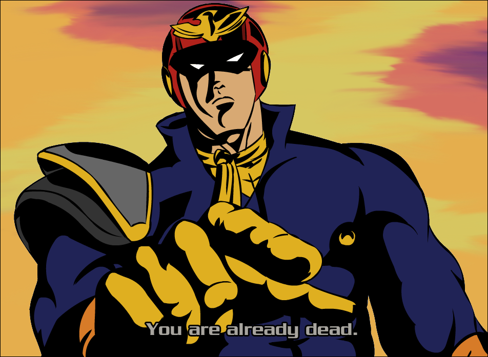

Creative problem-solver that has three years of professional technical experience.
Roles
University of Maryland Division of IT: Level 2 Technician
- Coordinated with team leads to design university technology instruction manuals for entire staff.
- Successfully evaluated, resolved, and/or escalated customers' tickets in ServiceNow for Crestron technologies and classroom PC repair issues
- Performed root cause analysis, risk identification and risk mitigation for threat prevention.
Silver Knights Academy: Coding Instructor
- Collaborated with assistants on instructing Scratch programming for elementary students
- Participated in designing programs to boost student enrollment .
- Explained basic OOP concepts
Alim Academy: Network Assistant
- Shadowed under Network technician, configuring firewalls and onsite disaster recovery protocols
- Updated classroom PC's and cleaned hard drives
- Worked on writing documentation for teachers to access different software
-
Student Technician that services Classroom technologies.
-
Scratch Instructor position with elementary students.
-
Part-time network and hardware routine maintenance.